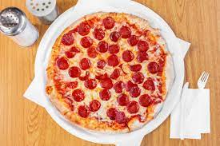

Pizza

Description
Who doesn't like a classic pepperoni pizza? This is one of my guiltiest
pleasures. If you hand me a large pepperoni pizza, I can easily demolish
the entire thing by myself. Most likely in a single sitting. Whatever. No
shame.
Ingredients
- 16 ounces pizza dough, store-bought or homemade
- 1/2 cup pizza sauce
- 18 to 20 slices pepperoni
- 12 ounces mozzarella cheese, grated
- 1/2 teaspoon ground black pepper
- 1 teaspoon fresh oregano (optional)
Steps
- Preheat oven to 500°F
-
Roll out the dough on a lightly floured surface. If it's hard to roll,
let it rest for about 5 minutes so it can come up to room temperature.
For a large pizza, roll it into a 14-inch (approximately) diameter
circle.
-
Add the toppings: add sauce in a light layer all over the pizza, leaving
around a quarter inch crust around the edges. Chop half of the pepperoni
and sprinkle it over the sauce. top the pizza with grated cheese and the
rest of the pepperoni. Season with black pepper.
-
Cook the pizza: If you're using a pizza stone,
carefully slide pizza into the center of the preheated pizza stone. Cook
for 6 minutes, then rotate the pizza so it cooks evenly. Cook for
another 6-8 minutes, or until the crust is golden brown and charred in
spots.
-
Slice and serve! Use a pizza peel to slide pizza out
onto a cutting board. Let it rest for a minute and slice into pieces.
Season with fresh oregano (again, optional). Serve while warm with
breadsticks, or if you're trying to be healthy (first of all, why are
you even eating pizza?) a side salad.
- Enjoy!!!